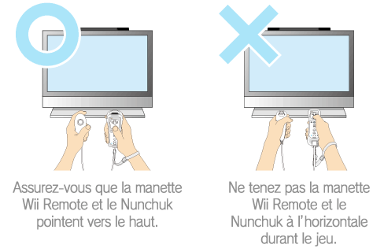
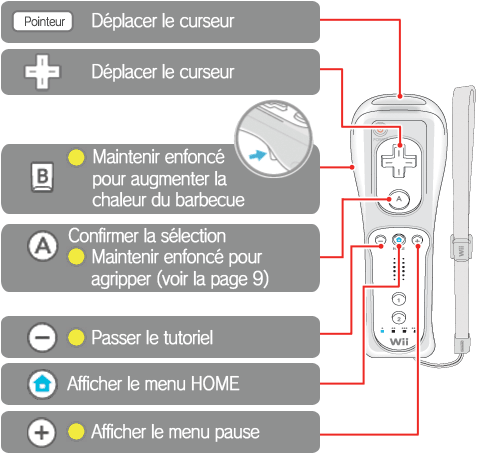
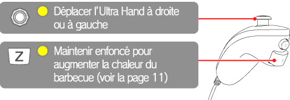
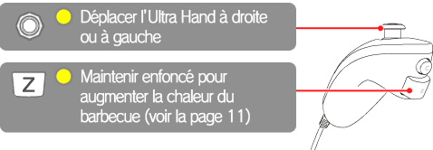

6 |
Commandes de base |
 |
|
Ce jeu se joue avec la manette Wii Remote™ et le Nunchuk™. Lorsque vous souhaitez sélectionner
une option dans les menus, pointez la manette Wii Remote vers l'écran, placez le curseur sur l'option voulue et appuyez sur Note : Vous pouvez également déplacer le curseur en appuyant sur ● Comment tenir les manettes durant le jeu Note : Vous aurez de la difficulté à contrôler l’Ultra Hand si vous jouez en tenant la manette Wii Remote et le Nunchuk à l’horizontale, alors ne le faites pas! ● Manette Wii Remote et Nunchuk Note : L’icône indique les commandes utilisées durant le jeu.  Pour pointer, visez simplement l’écran avec la manette Wii Remote et utilisez le curseur pour sélectionner une option.

Pour pointer, visez simplement l’écran avec la manette Wii Remote et utilisez le curseur pour sélectionner une option.

|
 .
. .
. |
 |
 |